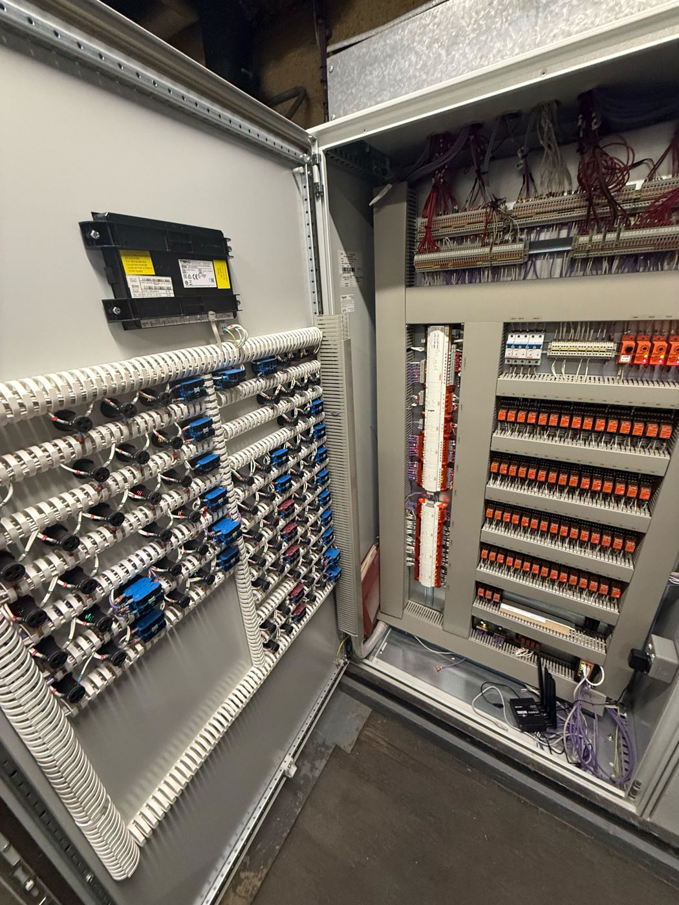
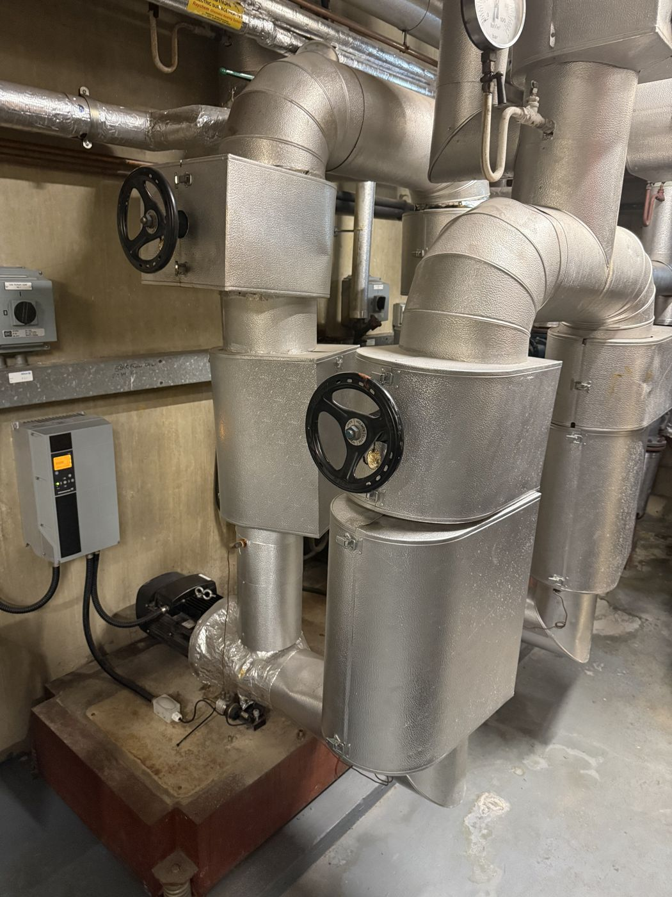
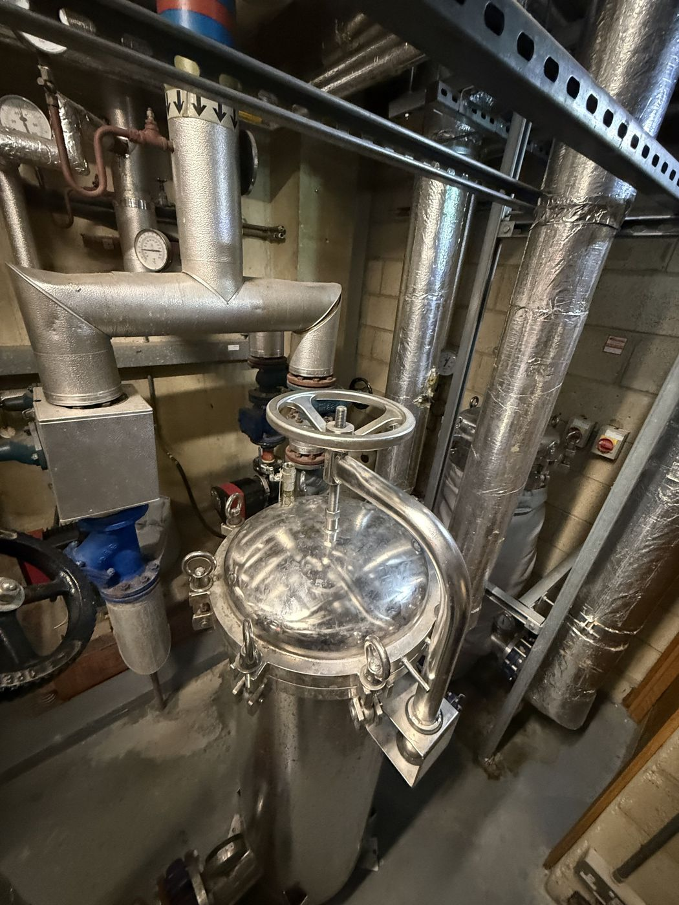
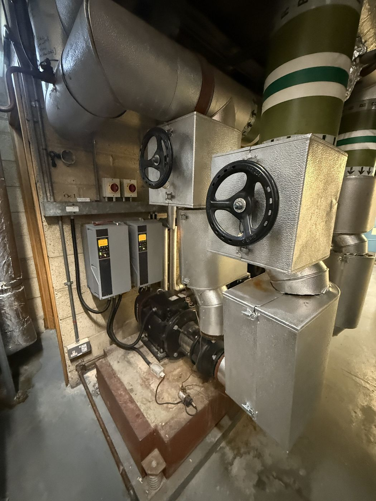
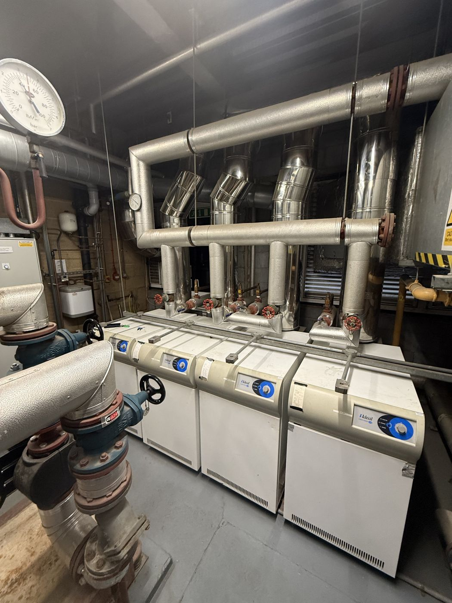
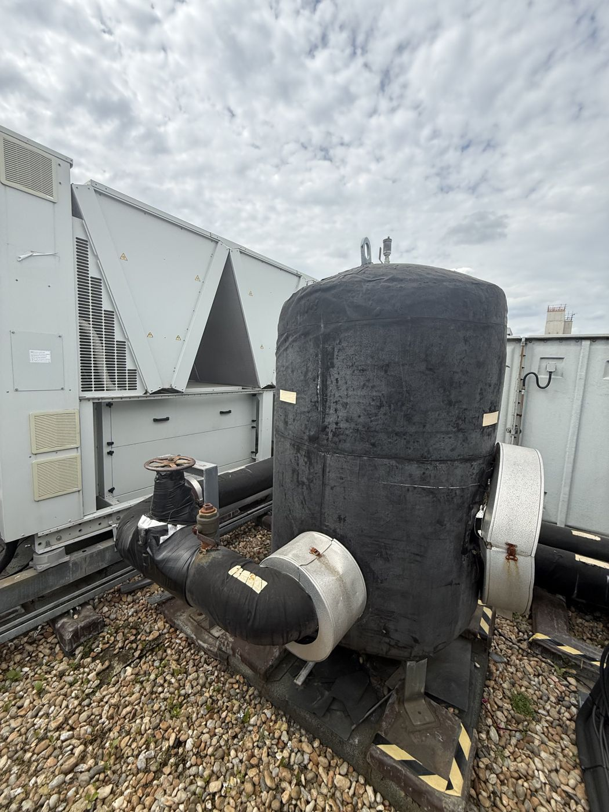
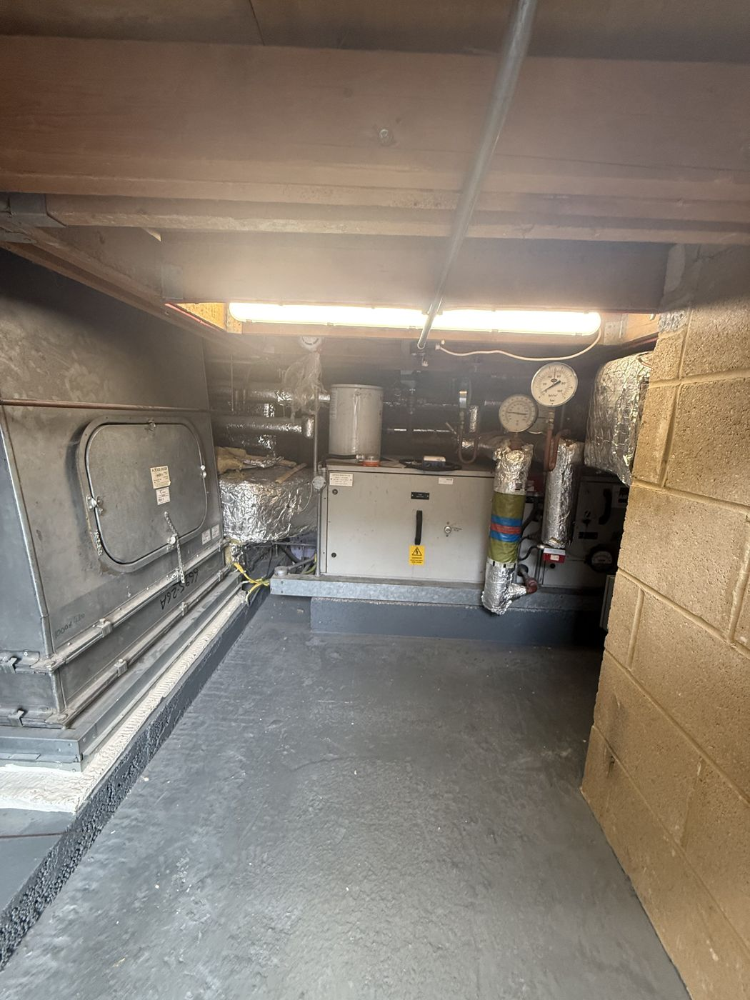
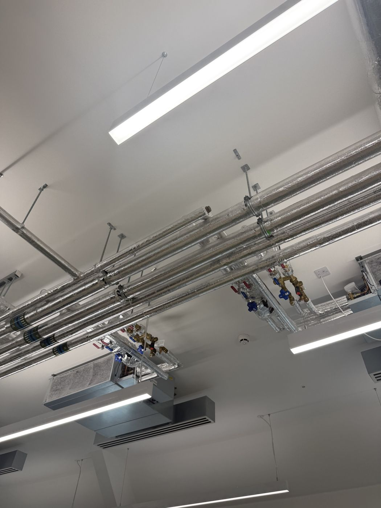
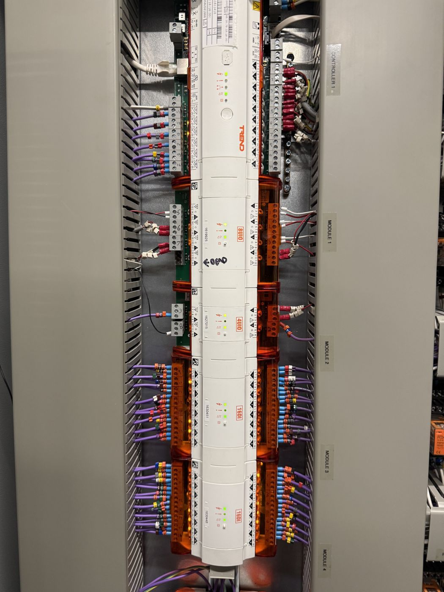
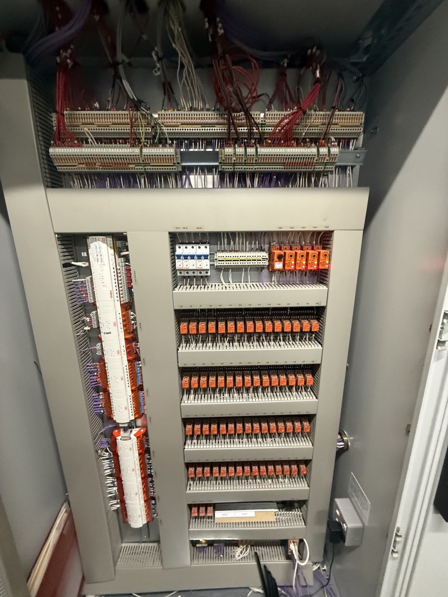

Gas detection interlocks, boiler plant controls and emergency shutoff systems for commercial buildings — designed, installed and commissioned by BMS engineers.
Every install integrates with your existing BMS head-end — Trend, Tridium/Niagara, Honeywell, Schneider EcoStruxure or Johnson Controls Metasys.
Automatic gas shutoff on leak detection, wired into ventilation proving and BMS alarm reporting. Compliant with DW/172.
Burner management and gas train monitoring for commercial boiler plant, with BMS-level fault diagnostics.
ESV integration and annual testing for commercial kitchens, plant rooms and industrial gas lines.
A look inside recent gas interlock and BMS control panel builds — cabling, relay banks and I/O termination done to spec.










Redline Gas Systems designs and installs gas detection interlocks that automatically shut off gas supply when a leak is detected, integrated directly with the building's BMS. 24/7 emergency, same-day callout available.
A gas interlock system prevents gas flow to an appliance unless ventilation and safety conditions are met. It's a legal requirement in most commercial kitchens and plant rooms under DW/172 and gas safety regulations.
Yes. We integrate emergency shutoff valves into existing BMS platforms — Trend, Tridium/Niagara, Honeywell, Schneider EcoStruxure and Johnson Controls Metasys — without replacing the head-end.
Cost depends on the number of gas appliances, existing BMS infrastructure and building size. We provide a fixed quote after a site survey.